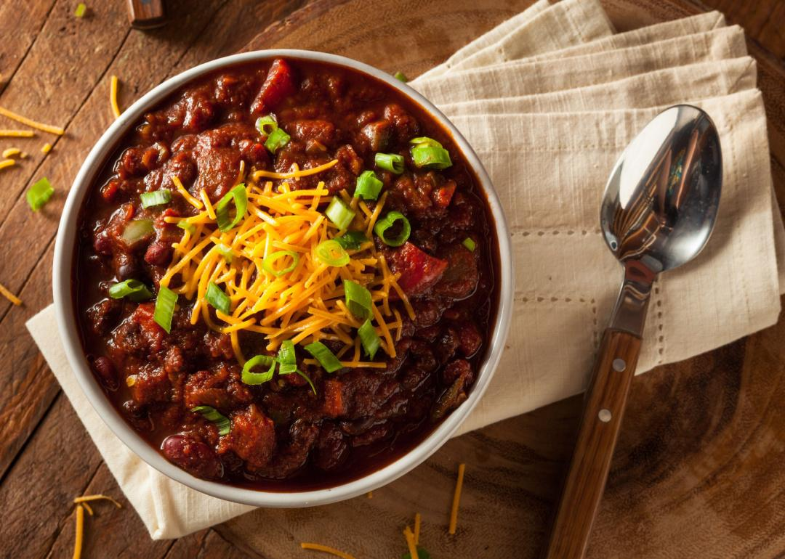

Washabinaros Chili

Description
This chili is packed with flavor thanks to an array of chile peppers, wasabi (Japanese horseradish), beer,
Italian sausage, and ground beef.
Ingredients
- 4 tablespoons vegetable oil, divided
- 1 pound ground beef
- 2 medium onions, chopped
Steps
- Heat 2 tablespoons oil in a large pot over medium heat. Add beef, sausage, onions, and garlic; cook and stir
until beef and sausage are browned and crumbly, 7 to 10 minutes.
- Pour in tomatoes, beef broth, beer, tomato paste, and coffee, then season with chili powder, brown sugar,
cumin, wasabi, oregano, cayenne, coriander, and salt. Stir in one can kidney beans and bring to a boil.
Home